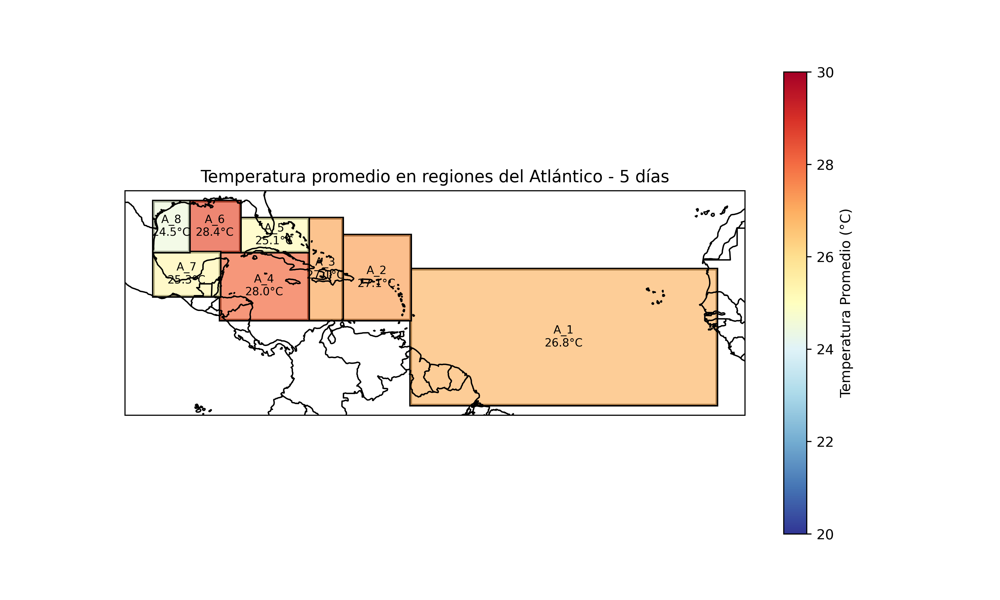
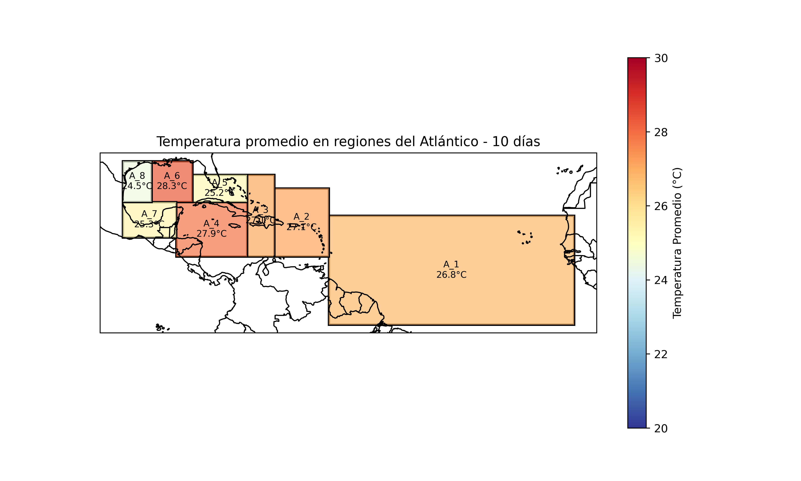
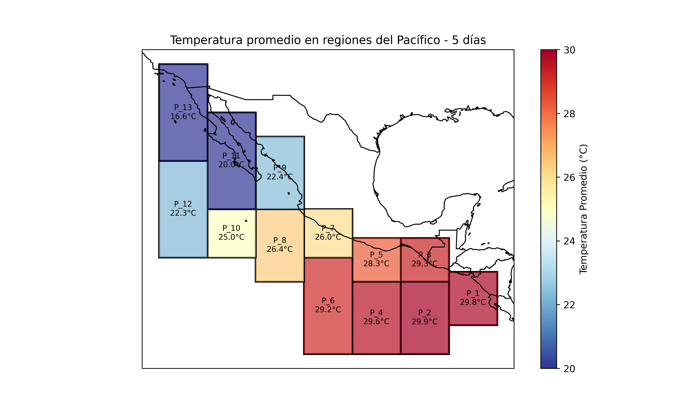
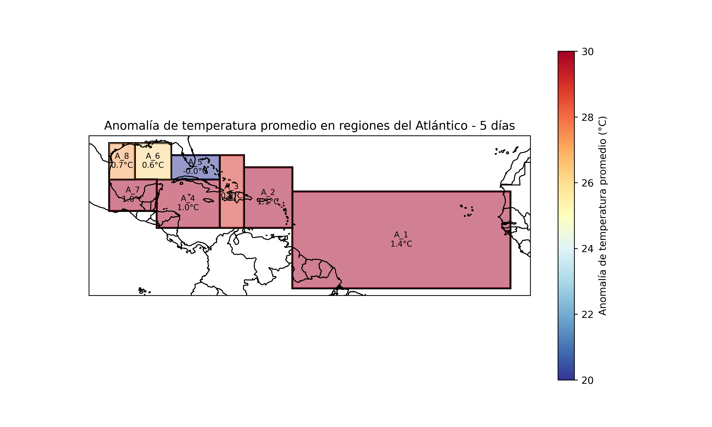
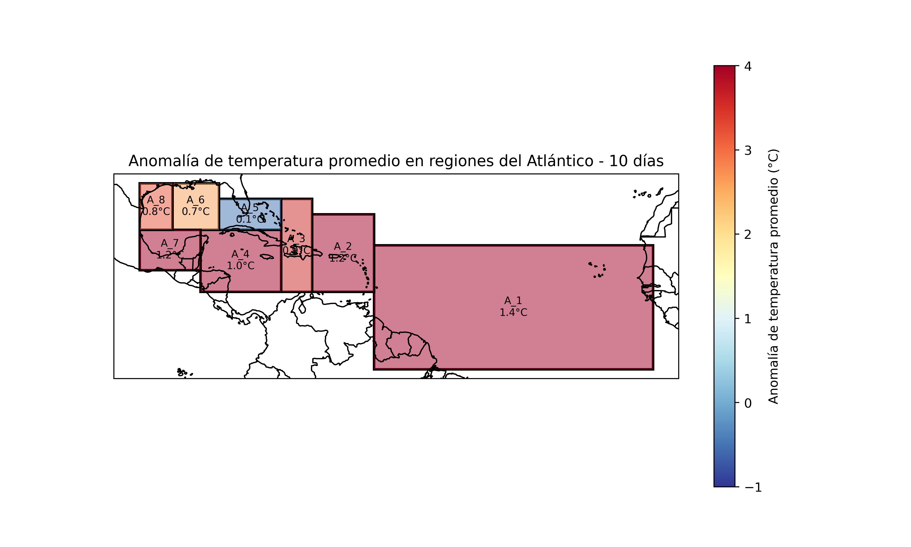
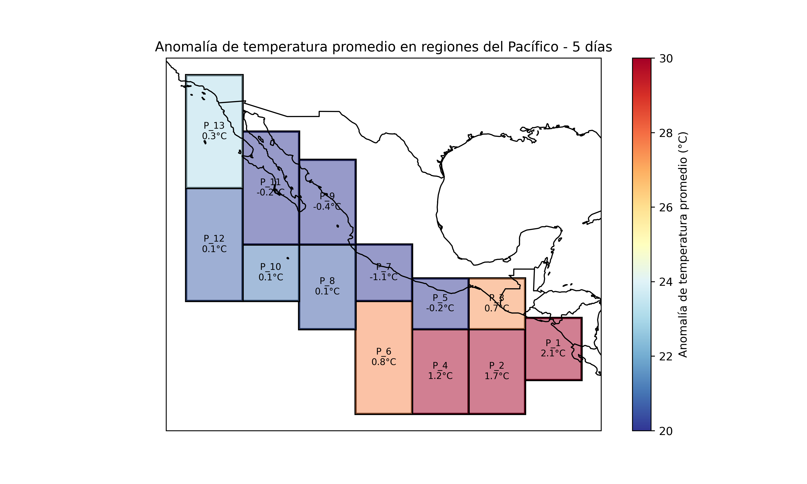
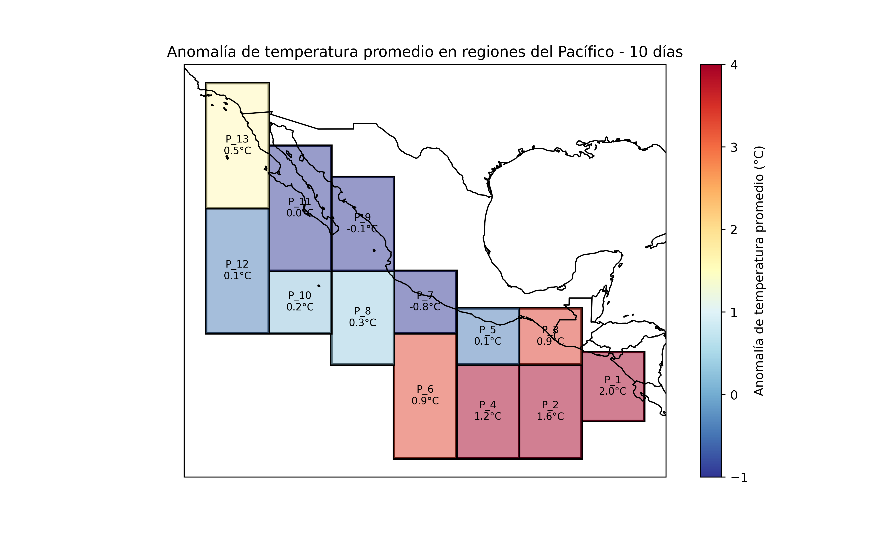

Misión
Visión
Conócenos
Casos de Éxito
Nuestros Servicios
Prueba
Contacto
OFARI Services
Mapas de monitoreo de la temperatura del mar a 5 y 10 días. Datos de alta resolución de la NOAA.
Selecciona el tipo de mapa:
Promedios de Temperatura
Anomalías de Temperatura
      